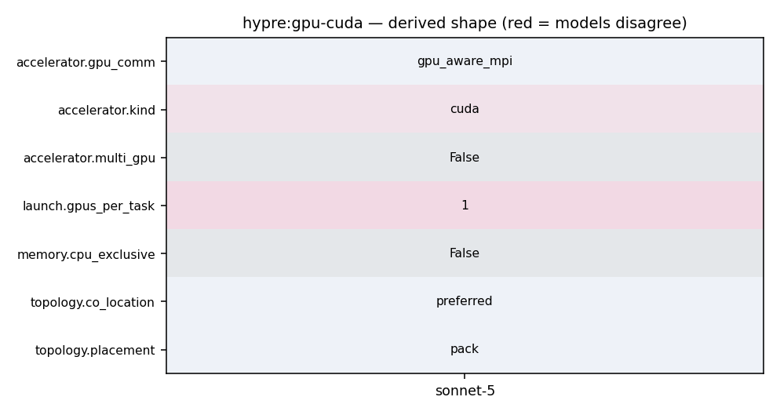

mpirun -np <N> ij (each rank calls cudaSetDevice(device_id) before HYPRE_Initialize(); one GPU bound per rank)
168 set_hypre_option(GPU HYPRE_ENABLE_CUDA "Use CUDA. Require cuda-10.0 or higher" OFF) 169 set_hypre_option(GPU HYPRE_ENABLE_HIP "Use HIP" OFF) 170 set_hypre_option(GPU HYPRE_ENABLE_SYCL "Use SYCL" OFF) 171 set_hypre_option(GPU HYPRE_ENABLE_GPU_AWARE_MPI "Use device aware MPI support" OFF) 172 set_hypre_option(GPU HYPRE_ENABLE_UNIFIED_MEMORY "Use unified memory for allocating the memory" OFF) 173 set_hypre_option(GPU HYPRE_ENABLE_DEVICE_MALLOC_ASYNC "Use device async malloc" OFF) 174 set_hypre_option(GPU HYPRE_ENABLE_THRUST_NOSYNC "Use Thrust par_nosync policy" OFF)
261 set_internal_hypre_option(USING HYPRE_BLAS) 262 set_internal_hypre_option(USING HYPRE_LAPACK) 263 set_internal_hypre_option(USING HOPSCOTCH) 264 set_internal_hypre_option(USING GPU_AWARE_MPI) 265 set_internal_hypre_option(USING CUDA_STREAMS) 266 set_internal_hypre_option(USING THRUST_NOSYNC) 267 set_internal_hypre_option(USING OPENMP)
166 167 # GPU common options 168 set_hypre_option(GPU HYPRE_ENABLE_CUDA "Use CUDA. Require cuda-10.0 or higher" OFF) 169 set_hypre_option(GPU HYPRE_ENABLE_HIP "Use HIP" OFF) 170 set_hypre_option(GPU HYPRE_ENABLE_SYCL "Use SYCL" OFF) 171 set_hypre_option(GPU HYPRE_ENABLE_GPU_AWARE_MPI "Use device aware MPI support" OFF) 172 set_hypre_option(GPU HYPRE_ENABLE_UNIFIED_MEMORY "Use unified memory for allocating the memory" OFF) 173 set_hypre_option(GPU HYPRE_ENABLE_DEVICE_MALLOC_ASYNC "Use device async malloc" OFF) 174 set_hypre_option(GPU HYPRE_ENABLE_THRUST_NOSYNC "Use Thrust par_nosync policy" OFF)
444 endif () 445 446 # Setup GPU build options: CUDA, HIP, SYCL are mutually exclusive 447 if (HYPRE_ENABLE_CUDA OR HYPRE_ENABLE_HIP OR HYPRE_ENABLE_SYCL) 448 include(HYPRE_SetupGPUToolkit) 449 else () 450 message(STATUS "GPU support not enabled") 451 set(HYPRE_USING_HOST_MEMORY ON CACHE INTERNAL "") 452 endif () 453 454 # Add any extra C compiler flags HYPRE_WITH_EXTRA_CFLAGS 455 if (NOT HYPRE_WITH_EXTRA_CFLAGS STREQUAL "")
221 222 .. code-block:: c 223 224 cudaSetDevice(device_id); /* GPU binding */ 225 ... 226 HYPRE_Initialize(); /* must be the first HYPRE function call */ 227 ... 228 /* AMG in GPU memory (default) */ 229 HYPRE_SetMemoryLocation(HYPRE_MEMORY_DEVICE); 230 /* setup AMG on GPUs */ 231 HYPRE_SetExecutionPolicy(HYPRE_EXEC_DEVICE); 232 /* use hypre's SpGEMM instead of vendor implementation */ 233 HYPRE_SetSpGemmUseVendor(FALSE); 234 /* use GPU RNG */
221 222 .. code-block:: c 223 224 cudaSetDevice(device_id); /* GPU binding */ 225 ... 226 HYPRE_Initialize(); /* must be the first HYPRE function call */ 227 ... 228 /* AMG in GPU memory (default) */ 229 HYPRE_SetMemoryLocation(HYPRE_MEMORY_DEVICE);
208 ``HYPRE_MEMORY_DEVICE`` is the GPU device memory, 209 and when built additionally with ``--enable-unified-memory``, it is the GPU unified memory (UM). 210 For a non-GPU build, ``HYPRE_MEMORY_DEVICE`` is also mapped to the CPU memory. 211 The default memory location of hypre's matrix and vector objects is ``HYPRE_MEMORY_DEVICE``, 212 which can be changed at runtime by ``HYPRE_SetMemoryLocation(...)``. 213 214 The execution policies define the platform of running computations based on the memory locations of participating objects. 215 The default policy is ``HYPRE_EXEC_HOST``, i.e., executing on the host **if the objects are accessible from the host**. 216 It can be adjusted by ``HYPRE_SetExecutionPolicy(...)``. 217 Clearly, this policy only affects objects in UM, since UM is accessible from **both CPUs and GPUs**. 218 219 A sample code of setting up IJ matrix :math:`A` and solve :math:`Ax=b` using AMG-preconditioned CG 220 on GPUs is shown below.
221 222 .. code-block:: c 223 224 cudaSetDevice(device_id); /* GPU binding */ 225 ... 226 HYPRE_Initialize(); /* must be the first HYPRE function call */ 227 ...
168 set_hypre_option(GPU HYPRE_ENABLE_CUDA "Use CUDA. Require cuda-10.0 or higher" OFF) 169 set_hypre_option(GPU HYPRE_ENABLE_HIP "Use HIP" OFF) 170 set_hypre_option(GPU HYPRE_ENABLE_SYCL "Use SYCL" OFF) 171 set_hypre_option(GPU HYPRE_ENABLE_GPU_AWARE_MPI "Use device aware MPI support" OFF) 172 set_hypre_option(GPU HYPRE_ENABLE_UNIFIED_MEMORY "Use unified memory for allocating the memory" OFF) 173 set_hypre_option(GPU HYPRE_ENABLE_DEVICE_MALLOC_ASYNC "Use device async malloc" OFF) 174 set_hypre_option(GPU HYPRE_ENABLE_THRUST_NOSYNC "Use Thrust par_nosync policy" OFF)
74 75 /* Print GPU info */ 76 /* HYPRE_PrintDeviceInfo(); */ 77 #if defined(HYPRE_USING_GPU) 78 /* use vendor implementation for SpGEMM */ 79 HYPRE_SetSpGemmUseVendor(0); 80 #endif 81 82 /* Default problem parameters */